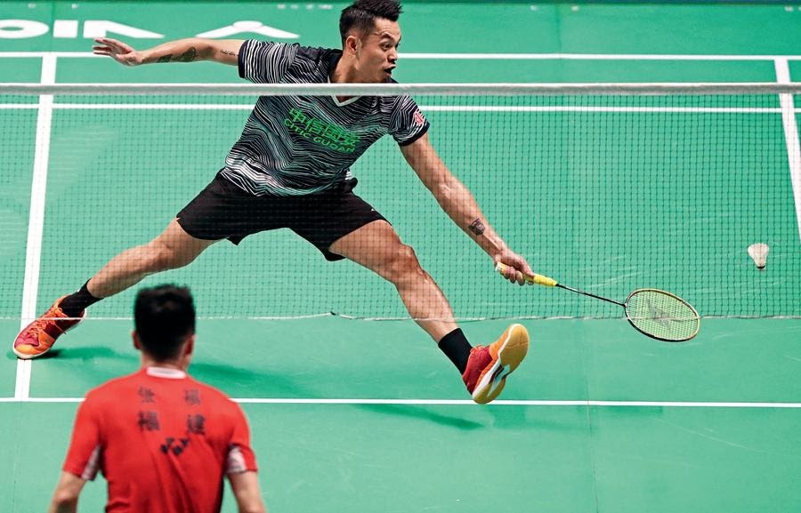
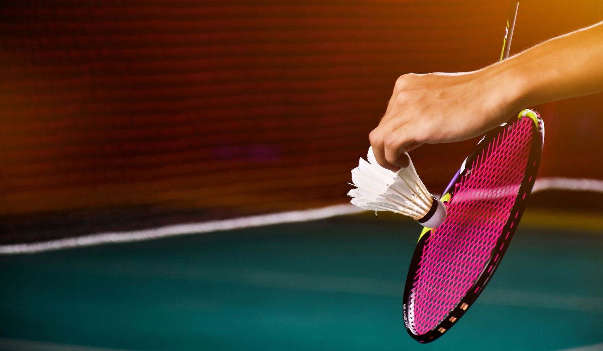

Информация о Бадминтоне

Бадминтон — это вид спорта, который играется на закрытой площадке между двумя или четырьмя игроками. Основная цель игры — удерживать перьевую (или пластиковую) шариковую ракетку в воздухе и отправлять его через сетку на сторону соперника так, чтобы он коснулся земли на их половине поля. Бадминтон является популярным развлечением и соревновательным видом спорта, как на любительском, так и на профессиональном уровне.
Вот основные аспекты бадминтона:
Площадка и снаряжение:
Бадминтон играется на прямоугольной площадке с сеткой посередине. Игроки используют ракетки с длинной ручкой и плоской основой, чтобы ударять по шариковой шариковой ракетке, который также называется воланом или пером.
Игроки:
Бадминтон может быть одиночной игрой (один на один) или парной игрой (два на два). В парной игре, одна команда стоит на одной стороне поля, а другая — на противоположной.
Волан:
Волан состоит из плоского пластикового корпуса и перьев, которые образуют конусообразную форму. Он легко летает в воздухе и обладает отличной маневренностью.
Удары:
В бадминтоне можно выполнять различные удары, включая подачи, удары снизу и сверху, дропы, спайки и другие. Каждый удар имеет свои характеристики и используется в разных ситуациях.
Счет:
Игра в бадминтон обычно проходит на определенное количество очков, и побеждает тот игрок или команда, которая первой набирает заданное количество очков. В зависимости от правил, можно играть на два или три выигрышных сета.
Специализация:
В бадминтоне существуют различные позиции и тактики, включая атакующих и защитников. От игроков требуется гибкость и быстрая реакция.
Техника и стратегия:
Техника игры в бадминтоне включает в себя хорошее позиционирование на поле, точные и сильные удары, быстрые перемещения и блокировки.
Профессиональные лиги:
Бадминтон пользуется популярностью и имеет профессиональные соревнования, включая Олимпийские игры и мировые чемпионаты.
Бадминтон отличается быстрыми движениями, точными ударами и динамичной стратегией. Это спорт, который подходит для игры в зале и на открытом воздухе, и он может быть как конкурентным видом спорта, так и забавным развлечением для друзей и семьи.
советы

Стать бадминтонистом — это интересный и занимательный путь, который требует усердной работы, тренировок и преданности. Вот некоторые шаги, которые помогут вам начать свой путь к становлению бадминтонистом:
Изучите правила:
Ознакомьтесь с правилами бадминтона, основными техниками и стратегиями игры. Это поможет вам понять, как правильно играть и что ожидать во время матчей.
Обучение у тренера:
Найдите опытного тренера, который сможет помочь вам развить технические навыки, такие как удары, движения и тактику игры. Тренерский опыт может существенно ускорить ваш прогресс.
Тренировки:
Уделяйте много времени тренировкам. Разрабатывайте навыки ударов с разных позиций, движения по полю и другие аспекты игры.
Физическая подготовка:
Бадминтон требует хорошей физической формы, быстрых реакций и ловкости. Работайте над выносливостью, силой, гибкостью и координацией.
Техника ударов:
Освойте разнообразные техники ударов, такие как удары снизу, сверху, дропы и т.д. Каждый удар имеет свои особенности и используется в различных ситуациях.
Партнерство:
Если вы играете в паре, научитесь работать с партнером, координировать движения, коммуницировать и принимать стратегические решения во время игры.
Самосовершенствование:
Анализируйте свои игры и тренировки. Работайте над устранением слабых сторон и постоянно стремитесь к улучшению.
Участие в турнирах:
Принимайте участие в местных турнирах и соревнованиях. Это поможет вам набрать игровой опыт, а также оценить свой уровень и продвижение.
Профессиональные возможности:
Если ваша цель — стать профессиональным бадминтонистом, рассмотрите возможности вступления в клубы, академии или программы развития, которые предоставляют дополнительное обучение и игровой опыт.
Постоянство и упорство:
Путь к успеху в бадминтоне требует времени и усилий. Будьте готовы к трудностям, но не теряйте мотивацию и продолжайте работать над собой.
Образ жизни:
Заботьтесь о своем здоровье, питании и сне. Правильный образ жизни поможет вам быть в хорошей физической и психологической форме.
Общение с опытными игроками:
Общение с бадминтонистами, имеющими опыт и достижения, может предоставить вам ценные советы и наставничество.
Запомните, что становление бадминтонистом — это процесс, который требует постоянного обучения, тренировок и опыта. Наслаждайтесь игрой и стремитесь к улучшению с каждой тренировкой и матчем.